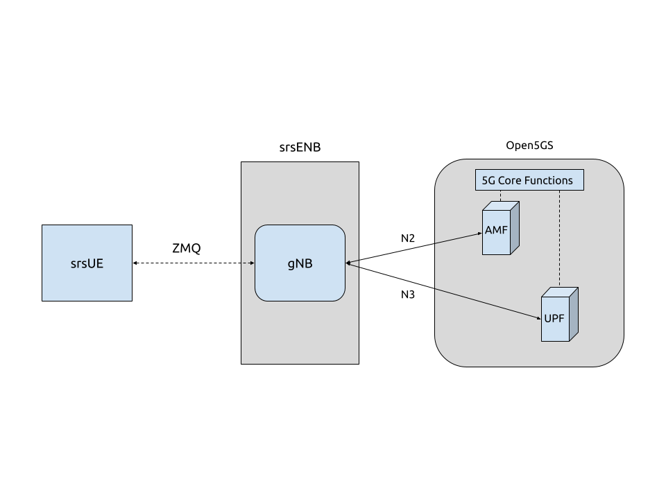

5G SA End-to-End
Tip
The srsENB supports prototype 5G features for both NSA and SA modes of operation however, these features are no longer under active development. Instead we recommend the srsRAN Project, our ORAN-native 5G CU/DU solution.
srsRAN 4G 22.04 brings 5G SA support to both srsUE and srsENB. 5G SA features can be enabled via the configuration files of both srsUE and srsENB. This application note demonstrates how to configure a 5G SA network using srsRAN 4G, a 3rd-party core (Open5GS) and ZeroMQ (ZMQ). Using ZMQ means there is no need for physical RF-hardware.
Network & Hardware Overview

For this application note, the following hardware and software will be used:
Dell XPS13 with Ubuntu 20.04.4
srsRAN 4G 22.04 (or later)
ZeroMQ
Open5GS 5G Core
For information on installing ZMQ and using it with srsRAN 4G, see our ZMQ App Note.
Open5GS
Open5GS is a C-language Open Source implementation for 5G Core and EPC. The following links will provide you with the information needed to download and set-up Open5GS so that it is ready to use with srsRAN 4G:
Configuration
To enable 5G SA features, changes need to be made to both the UE and eNB configuration files. This section will outline these.
Example configs are attached here:
Note
22.04.1 brings changes to the rr.conf, coreset0_idx is now a required field under nr_nell_list. If you are using an old config file with the latest update, you will need to add this to your config file.
These config files have been modified to remove certain options that are not essential to this use-case.
srsUE
The Following steps need to be taken to modify the srsUE config file to enable 5G SA features:
Enable ZMQ
Enable NR features
Configure USIM credentials & APN
ZMQ
To enable ZMQ the following is added to the UE config file:
[rf]
freq_offset = 0
tx_gain = 80
srate = 11.52e6
device_name = zmq
device_args = tx_port=tcp://*:2001,rx_port=tcp://localhost:2000,id=ue,base_srate=11.52e6
Note
A fixed sample rate must be used for 5G SA
The network namespace must also be configured:
[gw]
netns = ue1
NR Features
Firstly disable the LTE carrier(s):
[rat.eutra]
dl_earfcn = 2850
nof_carriers = 0
Enable the NR band(s) and carrier(s):
[rat.nr]
bands = 3,78
nof_carriers = 1
Lastly, set the release to release-15:
[rrc]
release = 15
USIM Credentials & APN
The following USIM Credentials are used:
[usim]
mode = soft
algo = milenage
opc = 63BFA50EE6523365FF14C1F45F88737D
k = 00112233445566778899aabbccddeeff
imsi = 901700123456780
imei = 353490069873319
The main change here is adjusting the IMSI, so that the correct PLMN is used.
The APN is enabled with the following configuration:
[nas]
apn = srsapn
apn_protocol = ipv4
Network Namespace
It is important to create to appropriate network namespace for the UE when using ZMQ.
To create the network namespace, use:
sudo ip netns add ue1
To verify the new “ue1” netns exists, run:
sudo ip netns list
More information on why this is needed can be found in the ZMQ App Note.
srsENB
The Following steps need to be taken to modify the srsENB config and associated config files to enable 5G SA features:
enb.conf
Set correct PLMN
Change MME Address to match Open5GS GTPU and NGAP address’.
Enable ZMQ
rr.conf
Add 5G cell to cell list, and remove LTE cells
enb.conf
PLMN & MME
Setting the PLMN (MCC & MNC) and MME address is done in the following way:
[enb]
enb_id = 0x19B
mcc = 901
mnc = 70
mme_addr = 127.0.0.2
gtp_bind_addr = 127.0.1.1
s1c_bind_addr = 127.0.1.1
s1c_bind_port = 0
n_prb = 50
The MMC and MNC are set to match the UE and Core. The MME address is configured to allow the eNB to communicate correctly with the AMF and UPF. If this is not changed srsENB and the Core will not connect.
ZMQ
ZMQ is enabled with the following changes to the config file:
[rf]
rx_gain = 40
tx_gain = 80
# Example for ZMQ-based operation with TCP transport for I/Q samples
device_name = zmq
device_args = fail_on_disconnect=true,tx_port=tcp://*:2000,rx_port=tcp://localhost:2001,id=enb,base_srate=11.52e6
rr.conf
The 5G NR cell must be added to the rr.conf when operating in 5G SA mode, the existing LTE cells must be removed. This can be done by either commenting them out, or deleting them entirely. In the attached rr.conf file they have been commented out.
The following 5G NR cell configuration is used:
nr_cell_list =
(
{
rf_port = 0;
cell_id = 1;
root_seq_idx = 1;
tac = 7;
pci = 500;
dl_arfcn = 368500;
coreset0_idx = 6;
band = 3;
}
);
Core
As highlighted above, the Open5GS Quickstart Guide provides a comprehensive overview of how to configure Open5GS to run as a 5G Core.
The main modifications needed are:
Change the TAC in the AMF config to 7
Check that the NGAP, and GTPU addresses are all correct. This is done in the AMF and UPF config files.
It is also a good idea to make sure the PLMN values are consistent across all of the above files and the UE config file.
The final step is to register the UE to the list of subscribers through the Open5GS WebUI. The values for each field should match what is in the UE config file, under the [USIM] section.
Note
Make sure to correctly configure the APN, if this is not done correctly the UE will not connect to the internet.
Set-up The Network
Core
Once the steps from the Open5GS Quickstart Guide are followed you do not need to do any more to bring the core online. It will run in the background. Make sure to restart the relevant daemons after making any changes to the config files.
eNB
First run srsENB. In this example srsENB is being run directly from the build folder, with the config files also located there:
sudo ./srsenb enb.conf
If srsENB connects to the core successfully the following (or similar) will be displayed on the console:
--- Software Radio Systems LTE eNodeB ---
Reading configuration file enb.conf...
Opening 1 channels in RF device=zmq with args=fail_on_disconnect=true,tx_port=tcp://*:2000,rx_port=tcp://localhost:2001,id=enb,base_srate=11.52e6
Supported RF device list: bladeRF zmq file
CHx base_srate=11.52e6
CHx id=enb
Current sample rate is 1.92 MHz with a base rate of 11.52 MHz (x6 decimation)
NG connection successful
CH0 rx_port=tcp://localhost:2001
CH0 tx_port=tcp://*:2000
CH0 fail_on_disconnect=true
==== eNodeB started ===
Type <t> to view trace
Current sample rate is 11.52 MHz with a base rate of 11.52 MHz (x1 decimation)
Current sample rate is 11.52 MHz with a base rate of 11.52 MHz (x1 decimation)
Setting frequency: DL=1842.5 Mhz, UL=1747.5 MHz for cc_idx=0 nof_prb=52
The NG connection successful message confirms that srsENB has connected to the core.
UE
srsUE can now be run. This is also done directly from within the build folder, with the config file in the same location:
sudo ./srsue ue.conf
If srsUE connects successfully to the network, the following (or similar) should be displayed on the console:
Reading configuration file ue.conf...
Opening 1 channels in RF device=zmq with args=tx_port=tcp://*:2001,rx_port=tcp://localhost:2000,id=ue,base_srate=11.52e6
Supported RF device list: bladeRF zmq file
CHx base_srate=11.52e6
CHx id=ue
Current sample rate is 1.92 MHz with a base rate of 11.52 MHz (x6 decimation)
CH0 rx_port=tcp://localhost:2000
CH0 tx_port=tcp://*:2001
Current sample rate is 11.52 MHz with a base rate of 11.52 MHz (x1 decimation)
Current sample rate is 11.52 MHz with a base rate of 11.52 MHz (x1 decimation)
Waiting PHY to initialize... done!
Attaching UE...
Random Access Transmission: prach_occasion=0, preamble_index=0, ra-rnti=0xf, tti=171
Random Access Complete. c-rnti=0x4601, ta=0
RRC Connected
RRC NR reconfiguration successful.
PDU Session Establishment successful. IP: 10.45.0.2
RRC NR reconfiguration successful.
It is clear that the connection has been made successfully once the UE has been assigned an IP, this is seen in PDU Session Establishment successful. IP: 10.45.0.2. The NR connection is then confirmed
with the RRC NR reconfiguration successful. message.
Testing the Network
PING
This is the simplest way to test the network. This will test whether or not the UE and core can successfully communicate.
Uplink
To test the connection in the uplink direction, use the following:
sudo ip netns exec ue1 ping 10.45.0.1
Downlink
To run traffic in the downlink direction use:
ping 10.45.0.2
The IP for the UE can be taken from the UE console output. This will change each time a UE reconnects to the network, so it is best practice to always double check the latest IP assigned by reading it from the console before running the downlink traffic.
iPerf3
In this setup the client will run on the UE side with the server on the network side. UDP traffic will be generated at 10Mbps for 60 seconds. When running the iPerf client, we use the UE network namespace and specify the network-side IP address. It is important to start the server first, and then the client.
Network-side
Start the iPerf server:
iperf3 -s -i 1
This will then listen for traffic coming from the UE.
UE-side
With the network and the iPerf server up and running, the client can be run from the UE’s network namespace with following command:
sudo ip netns exec ue1 iperf3 -c 10.45.0.1 -b 10M -i 1 -t 60
Traffic will now be sent from the UE to the eNB. This will be shown in both the server and client consoles, and also in the trace for both the UE and the eNB.
Example Output
Example client iPerf output:
Connecting to host 10.45.0.1, port 5201
[ 5] local 10.45.0.3 port 34894 connected to 10.45.0.1 port 5201
[ ID] Interval Transfer Bitrate Retr Cwnd
[ 5] 0.00-1.00 sec 1.30 MBytes 10.9 Mbits/sec 0 90.5 KBytes
[ 5] 1.00-2.00 sec 1.12 MBytes 9.44 Mbits/sec 8 55.1 KBytes
[ 5] 2.00-3.00 sec 1.25 MBytes 10.5 Mbits/sec 4 50.9 KBytes
[ 5] 3.00-4.00 sec 1.00 MBytes 8.39 Mbits/sec 4 43.8 KBytes
[ 5] 4.00-5.00 sec 1.00 MBytes 8.39 Mbits/sec 0 58.0 KBytes
[ 5] 5.00-6.00 sec 1.25 MBytes 10.5 Mbits/sec 5 53.7 KBytes
Example server iPerf output:
-----------------------------------------------------------
Server listening on 5201
-----------------------------------------------------------
Accepted connection from 10.45.0.3, port 34892
[ 5] local 10.45.0.1 port 5201 connected to 10.45.0.3 port 34894
[ ID] Interval Transfer Bitrate
[ 5] 0.00-1.00 sec 1.13 MBytes 9.44 Mbits/sec
[ 5] 1.00-2.00 sec 1.16 MBytes 9.69 Mbits/sec
[ 5] 2.00-3.00 sec 1.06 MBytes 8.88 Mbits/sec
[ 5] 3.00-4.00 sec 1.05 MBytes 8.78 Mbits/sec
[ 5] 4.00-5.00 sec 1.05 MBytes 8.78 Mbits/sec
[ 5] 5.00-6.00 sec 1.16 MBytes 9.75 Mbits/sec
UE Trace
The following example trace was taken from the srsUE console while running the above iPerf3 test:
---------Signal-----------|-----------------DL-----------------|-----------UL-----------
rat pci rsrp pl cfo | mcs snr iter brate bler ta_us | mcs buff brate bler
nr 500 29 0 -16u | 28 n/a 1.1 9.9M 0% 0.0 | 28 48k 9.5M 0%
nr 500 25 0 -18u | 27 70 1.1 13M 0% 0.0 | 28 61k 13M 0%
nr 500 28 0 -16u | 27 70 1.1 11M 0% 0.0 | 28 6.7k 12M 0%
nr 500 30 0 -14u | 28 70 1.1 9.2M 0% 0.0 | 28 48k 9.6M 0%
nr 500 26 0 -13u | 27 71 1.1 12M 0% 0.0 | 28 30k 12M 0%
nr 500 31 0 -17u | 27 n/a 1.1 8.8M 0% 0.0 | 28 43k 8.8M 0%
nr 500 29 0 -14u | 27 70 1.1 9.9M 0% 0.0 | 28 52k 10M 0%
nr 500 27 0 -7.0u | 27 70 1.1 11M 0% 0.0 | 28 47k 11M 0%
nr 500 26 0 -14u | 27 71 1.1 11M 0% 0.0 | 28 57k 12M 0%
nr 500 27 0 -16u | 27 70 1.1 11M 0% 0.0 | 28 49k 12M 0%
nr 500 28 0 -10u | 27 71 1.1 11M 0% 0.0 | 28 41k 11M 0%
eNB/ gNB Trace
The following example trace was taken from the srsENB console at the same time period as the srsUE trace shown above:
-----------------DL----------------|-------------------------UL-------------------------
rat pci rnti cqi ri mcs brate ok nok (%) | pusch pucch phr mcs brate ok nok (%) bsr
nr 0 4601 15 0 27 11M 296 0 0% | 66.2 99.9 0 28 10M 268 0 0% 0.0
nr 0 4601 15 0 27 10M 289 0 0% | 65.7 99.9 0 28 10M 264 0 0% 0.0
nr 0 4601 15 0 28 9.4M 262 0 0% | 65.0 99.9 0 28 9.5M 242 0 0% 0.0
nr 0 4601 15 0 27 11M 305 0 0% | 66.3 99.9 0 28 11M 278 0 0% 0.0
nr 0 4601 15 0 27 12M 339 0 0% | 66.4 99.9 0 28 13M 340 0 0% 0.0
nr 0 4601 15 0 28 9.6M 265 0 0% | 66.0 99.9 0 28 10M 263 0 0% 0.0
nr 0 4601 15 0 27 11M 310 0 0% | 65.6 99.9 0 28 11M 278 0 0% 0.0
nr 0 4601 15 0 27 9.7M 272 0 0% | 65.9 99.9 0 28 9.6M 245 0 0% 0.0
nr 0 4601 15 0 27 9.3M 260 0 0% | 65.8 99.9 0 28 9.5M 243 0 0% 0.0
nr 0 4601 15 0 27 11M 322 0 0% | 66.1 99.9 0 28 12M 302 0 0% 0.0
nr 0 4601 15 0 27 9.8M 274 0 0% | 65.8 99.9 0 28 10M 267 0 0% 0.0